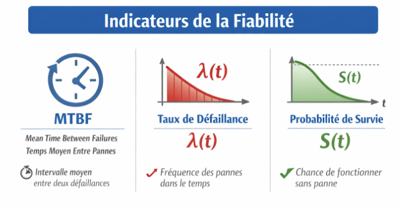
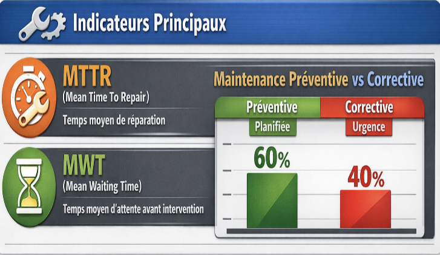

1. Introduction
Dans un environnement industriel caractérisé par la digitalisation et l’avènement de l’Industrie 4.0,
l'efficacité des systèmes de production dépend de plus en plus d'une gestion optimisée de la maintenance.
L'outil d'analyse FMDS (Fiabilité, Maintenabilité, Disponibilité et Sécurité) est essentiel pour examiner
et optimiser l'efficacité des installations industrielles.
Ce projet fait partie d'une approche globale qui associe l'étude des indicateurs FMDS à des méthodes
de maintenance prédictive. Le but est d'évaluer des indicateurs cruciaux comme le MTBF, le MTTR
et le taux de disponibilité, puis d'utiliser ces données pour suggérer des stratégies de maintenance
appropriées.
Cette recherche, en s'appuyant sur des données simulées ou concrètes et l'usage d'instruments
analytiques tels que MATLAB et Python, aspire à établir un lien entre les principes théoriques
et les mises en pratique industrielles, dans une logique d’amélioration continue et d’aide à la décision.
2. Objectifs du Projet et Problématique
2.1 Objectifs du projet
L'objectif central de ce projet est d'utiliser l'analyse FMDS pour juger l'efficacité d'un système industriel,
combiné à l'intégration de techniques de maintenance prédictive afin de perfectionner le processus décisionnel.
En d'autres termes :
- Assimiler et mettre en œuvre les notions de Fiabilité, Maintenabilité, Disponibilité et Sécurité.
- Effectuer le calcul d'indicateurs tels que MTBF, MTTR et le taux de disponibilité.
- Repérer les facteurs principaux d'indisponibilité ou de panne.
- Appliquer des modèles de diagnostic et de pronostic afin d'évaluer la durée de vie restante (RUL).
- Suggérer des approches de maintenance appropriées (corrective, préventive ou prédictive).
2.2 Problématique
Dans un environnement industriel compétitif, les arrêts non planifiés des équipements entraînent :
- Des pertes de production et des retards dans les délais de livraison.
- Une baisse de la qualité des produits ou services.
- Une augmentation des coûts de maintenance et de réparation.
- Un risque accru pour la sécurité du personnel et des installations.
- Une complexité dans la prise de décision concernant la maintenance et l’allocation des ressources.
Problématique principale : Comment l’analyse FMDS combinée aux techniques de maintenance
prédictive peut-elle améliorer la disponibilité des équipements et optimiser la performance industrielle
tout en réduisant les coûts et les risques ?
3. Définition de la FMDS
La FMDS (Fiabilité, Maintenabilité, Disponibilité, Sécurité) représente une démarche globale utilisée
dans les domaines de l'ingénierie de maintenance, de la sûreté de fonctionnement et de la gestion
des actifs industriels afin d'évaluer, d'analyser et d'optimiser le rendement des systèmes techniques.

Elle permet d'examiner le comportement d'un appareil tout au long de son cycle de vie, depuis la phase de conception
jusqu'à l'exploitation et l'entretien. Dans l'environnement de l'Industrie 4.0, caractérisé par la numérisation,
l'IoT industriel (IIoT) et l'analyse des données, la FMDS se transforme en un instrument stratégique d'assistance à
la prise de décision.
3.1 Fiabilité
La fiabilité correspond à l’aptitude d’un système ou d’un équipement à assurer la fonction requise sans interruption
ni défaillance pendant une durée déterminée et dans des conditions d’exploitation spécifiées. Elle s’appuie sur
une analyse statistique des défaillances, permettant de modéliser le comportement des pannes avec des lois
probabilistes (Weibull, exponentielle, log-normale). L’évaluation repose sur des indicateurs clés : MTBF, taux de défaillance...

3.2 Maintenabilité
La maintenabilité désigne l'aptitude d'un système à être réparé ou rétabli dans des délais contrôlés. Elle dépend de
la structure du système, de la facilité d'accès à ses composants, de l'existence des instruments nécessaires et des compétences du personnel.
Les indicateurs clés : MTTR (Mean Time To Repair), MWT (Mean Waiting Time), taux de maintenance préventive vs corrective...

3.3 Disponibilité
La disponibilité correspond à la probabilité qu’un système soit en état de fonctionnement
au moment où il est requis. Elle dépend directement de la fiabilité et de la maintenabilité.
Types de disponibilité
- Disponibilité instantanée : disponibilité à un instant donné
- Disponibilité opérationnelle : tient compte des conditions réelles d’exploitation
- Disponibilité intrinsèque : basée uniquement sur les paramètres techniques
3.4 Sécurité
La sécurité vise à garantir que les défaillances, même si elles se produisent,
ne présentent pas de danger pour les personnes, l’environnement ou les équipements.
- Évaluation des risques (AMDEC, HAZOP, arbres de défaillances)
- Conception intrinsèquement sécurisée
- Atténuation des effets par des dispositifs de sécurité
3.6 Importance de la FMDS dans les systèmes industriels
L’approche FMDS occupe une place essentielle dans les systèmes industriels modernes.
Elle permet d’améliorer la performance globale des équipements et d’optimiser la prise de décision.
- Optimisation de la disponibilité des installations
- Réduction des coûts globaux de maintenance (TCO)
- Amélioration de la continuité et de la qualité de production
- Prévention des incidents et amélioration de la sécurité
- Conformité aux normes internationales
La FMDS est largement utilisée dans des secteurs critiques tels que :
le nucléaire, la pétrochimie, l’énergie, le transport, l’aéronautique et l’industrie manufacturière.
4. Maintenance Prédictive
4.1 Définition et objectifs
La maintenance prédictive consiste à surveiller l’état des équipements afin d’anticiper
les pannes avant qu’elles ne surviennent.
- Éviter les arrêts imprévus
- Optimiser la disponibilité
- Réduire les coûts de maintenance
- Améliorer la sécurité
4.2 Avantages
- Diminution des défaillances inattendues
- Amélioration de la durée de vie des équipements
- Organisation plus efficace des interventions
4.3 Avantages par rapport aux approches traditionnelles
- Moins d’arrêts non planifiés
- Interventions basées sur l’état réel des machines
- Optimisation des coûts par rapport à la maintenance corrective ou préventive
4.4 Méthodes et techniques
- Surveillance conditionnelle (capteurs : vibration, température, pression)
- Analyse de données et intelligence artificielle
- IoT industriel et systèmes SCADA
4.5 Processus de mise en œuvre
- Identification des équipements critiques
- Collecte des données
- Analyse et détection des anomalies
- Planification des interventions
- Amélioration continue
Méthodes et Techniques de Maintenance
| Méthode |
Technique |
Application |
Type |
| Analyse vibratoire |
Spectre fréquentiel |
Roulements, engrenages |
Prédictive |
| Thermographie |
Caméra infrarouge |
Équipements électriques |
Préventive |
| Analyse d’huile |
Spectrométrie |
Moteurs, réducteurs |
Prédictive |
| Monitoring acoustique |
Émission acoustique |
Structures, vannes |
Prédictive |
Conclusion
L’association de la FMDS et de la maintenance prédictive permet une gestion
intelligente et proactive des équipements industriels, améliorant la performance,
la sécurité et la compétitivité globale.